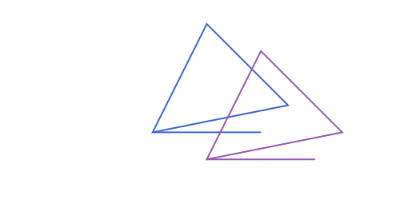
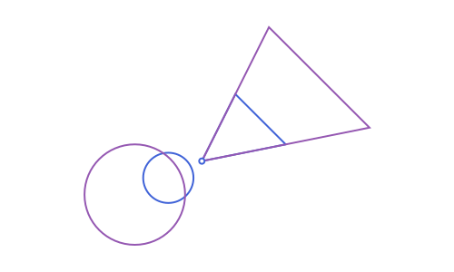
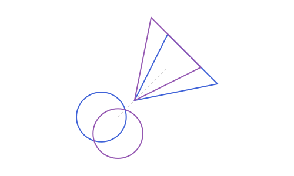
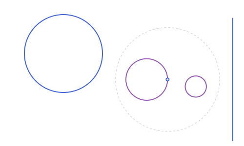
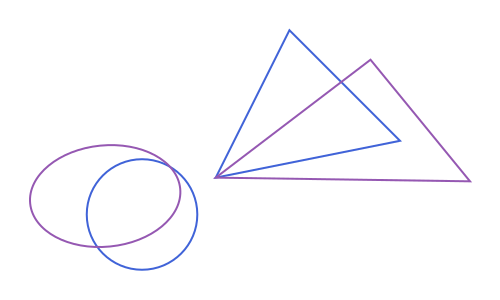

Macros: Transforming Shapes
The triangle, circle and segment left over from Macros: Sizing a Picture:
using Apollonius
t = APTriangle(APPoint(0.0, 0.0), APPoint(80.0, 0.0), APPoint(0.0, 80.0))
circ = APCircle2(APPoint(-1.0, -1.0), 1.5)
s = APSegment(APPoint(-2.0, 4.0), APPoint(6.0, -3.0))@translate / @translate!
v = APVector(2.0, -1.0)
T1, S1 = @translate v begin
t
s
end
T1APTriangle([2.0, -1.0], [82.0, -1.0], [2.0, 79.0])
t/s themselves are untouched by @translate; @translate! instead rebinds each named shape's own variable to its translated image (the object itself never mutates, since these are all immutable structs; only the variable is repointed, the same trick Setfield.jl's @set! uses):
t3 = APTriangle(APPoint(0.0, 0.0), APPoint(1.0, 0.0), APPoint(0.0, 1.0))
@translate! v t3
t3 # t3 itself now refers to the translated triangleAPTriangle([2.0, -1.0], [3.0, -1.0], [2.0, 0.0])A bare, unnamed expression has nothing to rebind, so the mutating forms reject it:
try
@translate! v begin
APPoint(0.0, 0.0) # not assigned to a name
end
catch e
e
endArgumentError("cannot mutate an unnamed expression: assign it to a variable first")@rotate / @rotate!
Takes an optional center (defaults to the origin, exactly like rotate itself):
R1, R2 = @rotate (pi / 2) APPoint(1.0, 1.0) begin
t
circ
end
R1APTriangle([2.0, 0.0], [2.000000000000005, 80.0], [-78.0, 4.884981308350689e-15])
t4 = APTriangle(APPoint(0.0, 0.0), APPoint(1.0, 0.0), APPoint(0.0, 1.0))
@rotate! (pi / 2) t4
t4APTriangle([0.0, 0.0], [6.123233995736766e-17, 1.0], [-1.0, 6.123233995736766e-17])@homothety / @homothety!
Also takes an optional center (default: the origin):
H1, H2 = @homothety 2.0 begin
t
circ
end
H1APTriangle([0.0, 0.0], [160.0, 0.0], [0.0, 160.0])
t5 = APTriangle(APPoint(0.0, 0.0), APPoint(1.0, 0.0), APPoint(0.0, 1.0))
@homothety! (-1.0) APPoint(0.5, 0.5) t5 # a point reflection through (0.5, 0.5)
t5APTriangle([1.0, 1.0], [0.0, 1.0], [1.0, 0.0])@reflection / @reflection!
about a point or a line, same as reflection itself:
mirror = APLine(APPoint(0.0, 0.0), APPoint(1.0, 1.0))
M1, M2 = @reflection mirror begin
t
circ
end
M1APTriangle([0.0, 0.0], [0.0, 80.0], [80.0, 0.0])
t6 = APTriangle(APPoint(0.0, 0.0), APPoint(1.0, 0.0), APPoint(0.0, 1.0))
@reflection! APPoint(2.0, 2.0) t6
t6APTriangle([4.0, 4.0], [3.0, 4.0], [4.0, 3.0])@invert / @invert! and @invert_neg / @invert_neg!
invert/invert_neg with respect to the circle centered at center (radius k, defaulting to 1.0); note that inversion can change a shape's own type (an APLine not through center inverts to an APCircle2, and vice versa), no different here:
center = APPoint(0.0, 0.0)
far_line = APLine(APPoint(2.0, 0.0), APPoint(2.0, 1.0))
I1, I2 = @invert center 3.0 begin
far_line
circ
end
I1 # an APCircle2: far_line doesn't pass through centerAPCircle2([2.25, 0.0], 2.25)
@invert! is the mutating form, exactly like every other macro's ! counterpart:
near_line = APLine(APPoint(0.5, 0.0), APPoint(0.5, 1.0))
@invert! center 3.0 near_line
near_line # rebound to its own inverted imageAPCircle2([9.0, 0.0], 9.0)@invert_neg is the negative-ratio counterpart, used the same way:
far_line2 = APLine(APPoint(2.0, 0.0), APPoint(2.0, 1.0))
@invert_neg! center far_line2
far_line2APCircle2([-0.25, 0.0], 0.25)
@affinemap / @affinemap!
Applies any APAffineMap m, exactly like calling m(shape) by hand; see Affine Maps for how m itself is built:
m = APAffineMap(1.3, 0.4, -0.2, 0.9, 0.0, 0.0)
T7, C7 = @affinemap m begin
t
circ
end
T7 # circ, being non-similarity-mapped, would come back as an APEllipse2, see Affine MapsAPTriangle([0.0, 0.0], [104.0, -16.0], [32.0, 72.0])
t8 = APTriangle(APPoint(0.0, 0.0), APPoint(1.0, 0.0), APPoint(0.0, 1.0))
@affinemap! m t8
t8APTriangle([0.0, 0.0], [1.3, -0.2], [0.4, 0.9])Embedding a macro call inside another expression
When a call to any of these (besides @boundingbox, which only takes one argument before the block) appears as an argument to something else, rather than its own statement, wrap it in parentheses:
f((@rotate angle p), other_arg) # correct
f(@rotate angle p, other_arg) # wrong: swallows other_arg into the macro callThis is a general rule for any multi-argument macro call in Julia (a bare @macro arg1 arg2 swallows comma-separated arguments that follow), not specific to this package: a plain statement like x = @rotate angle p never runs into it.